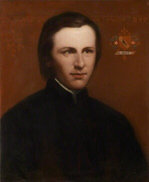
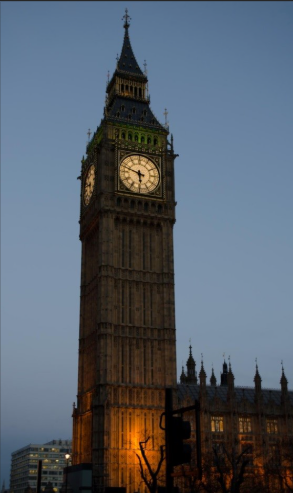
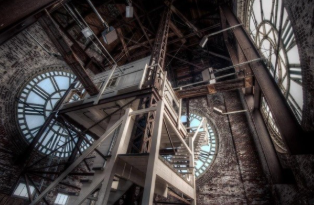
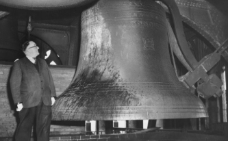
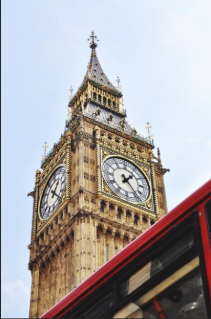

Big Ben for junior classes

Big Ben is the tourist name for the clock tower of the Westminster Palace in London. The official name since 2012 is the Elizabeth Tower.
Augustus Pugin is the English architect who designed the Big Ben clock tower. Opening date — May 31, 1859 (clock started).
Features of the building
Height — 96 meters.
Shape — four sides, each side is 12.2 meters long.
Clock faces are on all four sides. Above them are shields with symbols of the four countries of the United Kingdom — the rose of England, the thistle of Scotland, the shamrock of Ireland, and the leek of Wales.
Inside the tower is a special prison room, which can only be entered from the House of Commons — you cannot enter it from the main door.
Traditions
When parliament meets, the Ayrton light on Big Ben is lit.
Big Ben is a symbol of the New Year in Britain: on the evening of December 31, people come to the clock to celebrate midnight with fireworks.
The clock is wound by hand — three times a week.
Big Ben is a symbol of British punctuality: this very accurate clock shows an important part of the national character.
Big Ben for senior classes
History of creation:
The idea to build a clock tower for the new parliament building (the old one, built in the 11th century, burned down in 1834) was from the architect Charles Barry. But another architect, Augustus Pugin, designed Big Ben. He was born in a family of a French draftsman and as a teenager made furniture in a medieval style for Windsor Castle. Thanks to Pugin, Big Ben got its famous look.
Augustus Pugin

Building the tower took 16 years — from 1843 to 1859. Sadly, Pugin did not see his creation, which later became one of England’s main sights: he died in 1852.
Features and interesting facts
• Big Ben is a 96-meter tall brick building, covered with limestone and granite, with a roof made of 3,400 iron “scales.”
• The tower was built from the inside — people in London could not see any scaffolding because it was inside the building.
• Materials came from many parts of the kingdom — West Midlands, Yorkshire, Cornwall. Builders used new technology of the time: concrete mixers and steam-powered cranes.
• For more than 150 years, Big Ben was called the Clock Tower of Westminster Palace. But in 2012, the year of Queen Elizabeth II’s 60 years on the throne, it was renamed in her honor.
• The clock was made not by an engineer but by a lawyer and amateur clockmaker, Edmund Beckett Denison. He made a pendulum that could work well in different weather.
• The light from the lamp (Ayrton light) can be seen from anywhere in London. At first, the beam pointed to Buckingham Palace. Queen Victoria knew that the House of Commons met even after dark.
• Some famous people were in the prison room inside. One was Emmeline Pankhurst — leader of the movement for British women’s rights.
Features of the structure and interesting facts




1. The clock mechanism weighs 5 tons. Each clock face is 7 meters wide. The hour hand is 2.7 meters long, and the minute hand is 4.2 meters long.
2. There are five bells. The big one — Big Ben — rings every hour. Four small bells ring every 15 minutes.
3. Above the bells is a platform with a big lamp (Ayrton light), installed in 1885 and named after politician Acton S. Ayrton. It lights during evening parliament meetings.
4. To get to the lamp, the tower keeper climbs almost 400 steps.
5. Inside the tower is a prison room. It was used for emotional members of parliament.